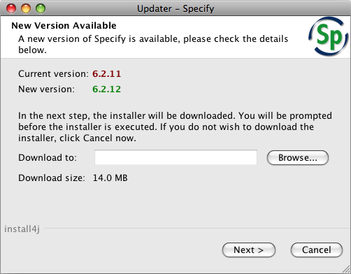
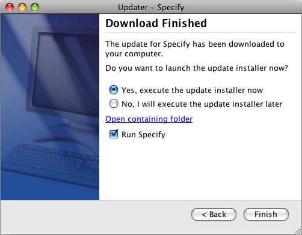
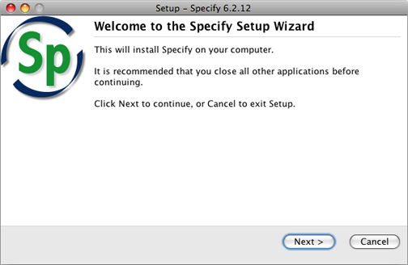

When Specify is started, the application checks with a project server for any available updates. Updates must first be downloaded, then installed.
Specify software updates can also be manually obtained at anytime through the ‘Check for Updates’ option on the Help menu. The automatic check for updates can also be turned off in Edit > Preferences > System on Windows and Linux or Specify > Preferences > System on the Macintosh.
The first update window offers the ability to cancel the update. Updates must be accepted for ISA agreements to be considered valid.

Upate Notification Dialog
The next window displays information regarding the changes to the Specify platform included in the update.
Update Information Dialog
The final window gives the status of the download of the update and offers the ability to go back to a previous window for the update and automatically start Specify.
Click the Finish box to install the update.
Click the Back box to view a previous window.
Check the box to automatically Run Specify to begin the login procedure once the install process is complete.

Download Finish Dialog
The update must now install.

Installation Window
Click the Next button to install the update or Cancel to to exit.
The next windows follow the typical installation process and offer both a Cancel button, Back button and Next button as well as information about the update.
Canceling at any time during either the update download or installation will not update Specify to the latest version. The update function will not automate again until a new version, or update, is released.